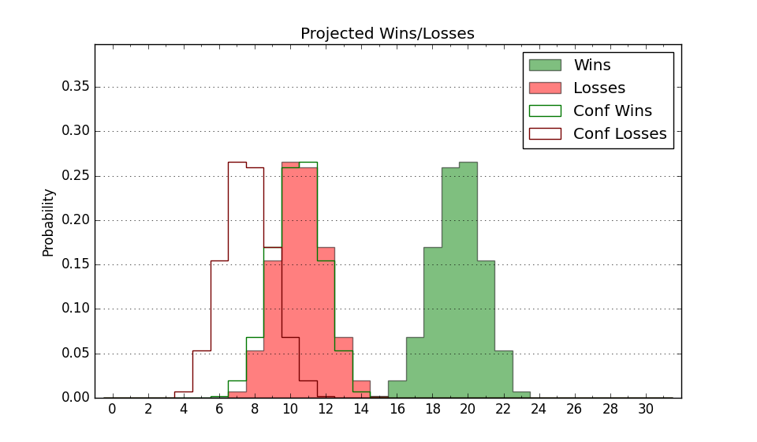

| Home | Game Probabilities | Conferences | Preseason Predictions | Odds Charts | NCAA Tournament |
| City: | Dayton, Ohio | |
| Conference: | Atlantic 10 (5th)
| |
| Record: | 4-4 (Conf) 13-7 (Overall) | |
| Ratings: | Comp.: 11.4 (83rd) Net: 11.0 (84th) Off: 116.1 (46th) Def: 105.1 (158th) SoR: 5.4 (78th) |
| Remaining | ||||||
|---|---|---|---|---|---|---|
| Date | Opponent | Win Prob | Pred. | |||
| 1/31 | @ Saint Louis (107) | 47.8% | L 73-74 | |||
| 2/4 | Davidson (130) | 81.3% | W 79-69 | |||
| 2/7 | VCU (49) | 50.2% | W 70-69 | |||
| 2/12 | @ Fordham (219) | 73.6% | W 79-72 | |||
| 2/15 | Duquesne (162) | 84.2% | W 74-63 | |||
| 2/21 | @ Loyola Chicago (161) | 61.1% | W 73-70 | |||
| 2/26 | @ Rhode Island (118) | 51.8% | W 76-75 | |||
| 3/1 | Richmond (226) | 91.0% | W 76-61 | |||
| 3/4 | Saint Louis (107) | 75.7% | W 77-69 | |||
| 3/7 | @ VCU (49) | 22.8% | L 66-74 | |||
| Previous | Game Score | |||||
| Date | Opponent | Win Prob | Result | Off | Def | Net |
| 11/4 | St. Francis PA (326) | 96.8% | W 87-57 | -5.4 | 13.1 | 7.7 |
| 11/9 | Northwestern (52) | 51.1% | W 71-66 | -5.1 | 11.6 | 6.5 |
| 11/13 | Ball St. (285) | 94.9% | W 77-69 | -13.1 | 2.5 | -10.6 |
| 11/20 | New Mexico St. (165) | 85.4% | W 74-53 | 4.3 | 9.7 | 14.0 |
| 11/25 | (N) North Carolina (39) | 29.2% | L 90-92 | 2.9 | -4.7 | -1.8 |
| 11/26 | (N) Iowa St. (7) | 11.3% | L 84-89 | 26.9 | -3.7 | 23.2 |
| 11/27 | (N) Connecticut (30) | 23.4% | W 85-67 | 22.1 | 17.3 | 39.4 |
| 12/3 | Western Michigan (309) | 95.8% | W 77-69 | 6.7 | -21.5 | -14.8 |
| 12/7 | Lehigh (292) | 95.2% | W 86-62 | 13.7 | -4.1 | 9.6 |
| 12/14 | Marquette (21) | 30.9% | W 71-63 | 11.6 | 17.3 | 28.9 |
| 12/17 | UNLV (95) | 71.5% | W 66-65 | -5.1 | -2.5 | -7.6 |
| 12/20 | (N) Cincinnati (40) | 29.8% | L 59-66 | -12.6 | 7.1 | -5.5 |
| 12/31 | La Salle (211) | 89.5% | W 84-70 | -11.2 | 7.5 | -3.7 |
| 1/4 | @George Washington (147) | 58.3% | L 62-82 | -16.7 | -15.2 | -31.9 |
| 1/8 | @Massachusetts (199) | 69.6% | L 72-76 | -16.3 | -6.5 | -22.8 |
| 1/15 | George Mason (80) | 64.5% | L 59-67 | -6.0 | -17.5 | -23.5 |
| 1/18 | Loyola Chicago (161) | 84.2% | W 83-81 | -5.3 | -7.1 | -12.4 |
| 1/21 | @Duquesne (162) | 61.1% | W 82-62 | 13.5 | 11.4 | 24.9 |
| 1/24 | Saint Joseph's (89) | 69.4% | W 77-72 | 3.9 | -5.0 | -1.1 |
| 1/28 | @St. Bonaventure (92) | 41.3% | L 53-75 | -11.3 | -19.8 | -31.1 |
| Stats & Trends | |||||
|---|---|---|---|---|---|
| Current | Day | Week | Month | Season | |
| Composite | 11.4 | -0.2 | -2.0 | -8.8 | -8.0 |
| Comp Rank | 83 | -1 | -12 | -48 | -54 |
| Net Efficiency | 11.0 | -0.2 | -1.9 | -9.3 | -- |
| Net Rank | 84 | +1 | -8 | -45 | -- |
| Off Efficiency | 116.1 | -0.1 | -0.3 | -3.9 | -- |
| Off Rank | 46 | -- | -3 | -26 | -- |
| Def Efficiency | 105.1 | -0.2 | -1.6 | -5.4 | -- |
| Def Rank | 158 | -1 | -27 | -66 | -- |
| SoS Rank | 92 | -5 | +1 | -32 | -- |
| Exp. Wins | 19.4 | -0.1 | -0.6 | -4.1 | -2.6 |
| Exp. Conf Wins | 10.4 | -0.1 | -0.6 | -4.1 | -3.4 |
| Conf Champ Prob | 1.8 | +0.0 | -2.8 | -58.9 | -49.0 |

| Advanced Stats | ||
|---|---|---|
| Stat | Value | Rank |
| Off Eff FG % | 0.568 | 32 |
| Off Ast Ratio | 0.184 | 17 |
| Off ORB% | 0.273 | 229 |
| Off TO Rate | 0.129 | 50 |
| Off FT Ratio | 0.395 | 55 |
| Def Eff FG % | 0.506 | 163 |
| Def Ast Ratio | 0.143 | 143 |
| Def ORB% | 0.255 | 60 |
| Def TO Rate | 0.157 | 112 |
| Def FT Ratio | 0.275 | 62 |